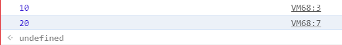
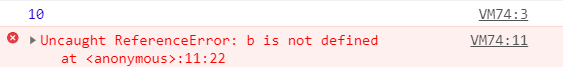
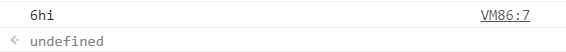
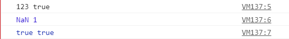
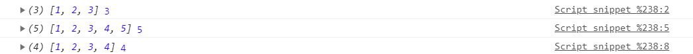
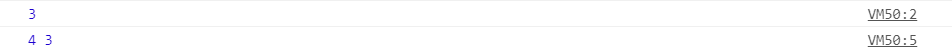
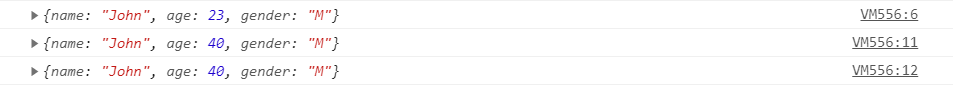

Javascript 💪
Introduction to the language
Can you even imagine a productive day without the web? Without websites? In 2020 (...let's just ignore the dangers to humanity this foresaken year brought), we are right now at the peak of connectivity and reach (and corona too, hehe..okay) . All
this is possible due to the three small W's.(Yeah I just wanted the www to sound something quirky and its cringy, but I'm still gonna do it, you know why? Because i CAN haha , judgemental pieces of shit ) The websites which can be called the web
itself (cause what is web without websites, huh?) are comprised of three main technologies the HTML, the CSS and ofc,or why would I be writing all this under that big black title, Javascript.
HTML is used to put in the contents. Everything that you see on the website the text, buttons, images, icons , all are placed there with the help of HTML. It stands for HyperText Markup Language. A markup language uses tags and easily
understandable keywords to add elements and give a format to the website.
CSS stands for Cascading Style Sheeets, this is used for enhancing the presentation of the website, all the colors ,the layout and everything which makes the website appealing and not like this pain to look at page of ugliness (well I didn't want
to waste much time okay and if you've already read this far you don't care about good taste too so stop creating a fuss and keep reading ).
Both these languages don't involve logic like other programming languagesyou are used to, so learning them is respectively easily, cause obv you don't have to use much braincells(that's why I'm in love with these 🥰)
Javascript is a programming language. It is a lightweight, dynamic, object-oriented, and it goess onnnn.... I know its very confusing and you're dude stfu and explain all that first and then carry on,but you see this is the thing with programming
languages you don't go from the most basic thing up, you learn something and then related to that somethingand so and so. But these are concepts which form the grounds of Javascript and i will tell you them as we proceed (wanna get overwhelmed
and then say "programming is not my thing ", ofcourse not Mr.Iwannaknoweverythingrn, sabar karo)
Javascript adds functionality to the website and makes it dynamic.
What dynamic means is that the page changes with time. For example this webpage is static,i.e, it will remain the same no matter how many times you open it, unless i make some changes in the html here and republish it. Dynamic
websites do not remain the same, they change like facebook has new feed everytime you open it, that is dynamic.
Earlier Dynamic (this is not the same as a dynamic programming language) websites were server-side scripted. (A srever is nothing but a 24*7 working computer which handles the functioning of the website). This means that data is uploaded and
recieved by the server which takes some time.
Enter Javascript.. this programming language was created to do client side scripting and rendering. The browser acts as the compiler to the language, thus we can ad logic on the client side only that means less interaction with the server thus it
is faster.
Now with the incoming of Node.js *audience thunders* JS can also be used in the backend to create server-side programming.Node creates a environment for JS to be run without the browser ,i.e,on the system. Backend, in programming, means the side
which is not visible to the user. The whole layout and presentationof the page is frontend. (See, Im explaining every little detail i can, be grateful)
Now javascript is not the almighty language, it has some caps like it is not good for making huge apps as it becomes hard to handle and debug and ofc some more which i am not capable of explaining (rn that is fucker)
Ahead we'll start diving into this beautiful Language *drumrolls* Javascript.
Cheerios for coming this far 🙌🙌
P.S NO...JAVASCRIPT IS NOT RELATED TO JAVA
BASICS
Let's start with the basics, now most of the concepts here are general to programming itself and not any language dependent, some differences are there in every language and I will keep stating them for JS as they come.
Ready? 👍
First things first: We use console.log() to print on the console. Okay now, go
-
VARIABLES AND DATA TYPES
Everybody here has a hunch of what variables might be (thanks to 8th grade maths), so yeah.. Variables are places where some information is stored. In more technical language it is a named memory location which is used to store some data.
The name that you give to the variable is called IDENTIFIER. Just like a variable "x" in maths which can be anything.
Languages have different ways of declaring a variable.In javascript we declare a variable by putting the 'var' keyword in front of it.
EX:
var x = 8 ; // just declaring the variable with identifier 'x'
In this example a memory is allocated with the name 'x' and a value of 8 is assigned to it.
We can declare variable with 2 more keywords 'let' and 'const'. I will discuss this further in this topic.
In maths this x could only have numerical values, but we program almost everything and not just numbers,so here comes the concept of DATATYPES.
A datatype tells the compiler what type of data is going to be stored.
Javascript has 6 basic datatype:
- Number
The data is a number 0,1,2,3,9909,etc
- String
The data is a string ex: 'cat','blacboard','atom',etc
- Boolean
The data is either true or fales.
- Object
This is a vast topic and will be discussed later
- Undefined
When the variable is only declared and not assigned any value it automatically takes the value of undefined
- Null
It is empty, has no value. *Not the same as undersigned*
When introducing Javascript i told you it is a dynamic language right?
There are two types of typed language: Dynamic and Statically typed.
Statically typed means that the coder has to define the data type of the variable while declaring it as we see in the common programming languages like C , C++, Java etc.
EX:
Dynamic or loosely typed language means that the compiler itself assigns the data type as per the data we assign the variable. Languages like JS and python etc are loosely typed. This makes them fast to code in.
EX:
before we move ahead let me explain you the concept of scope
Scope
Every variable or function in js has a scope. A scope is like the boundary till which the variable is valid.
Variables and functions are either declared with a global scope or a local scope ,i.e ,globally or locally. To explain this we'll take help of an example
Assume your sector where you live is the complete code. The houses with their boundaries are different funcitons. Now there is an apple tree inside the boundaries of your house in your garden (you have a huge bunglow with huge kitchen
garden,... too much? ), your neighbours can't access the tree right? This means that the scope of your tree is local to your house.
Now lets assume there is a tree in your sector not in anybodies house, so anyone can access it. This means it has a global scope.
And lets take another assumption of an apple tree in the sector surrounded by a very small and weak wall.
Now any variable declared outside of all the functions but in the code is globally declared. It can be accessed anywhere in the whole program.
EX:
OUTPUT

If we declare a variable inside of the funnction xyz then its scope is of the function itself, it can not be accessed outside of the function.
EX:
OUTPUT

I stated earlier that we can use 2 more keywords to declare variables namely, 'let' and 'const'
-
let
'let' keyword functions much like 'var' with slight differences in their scope.
It is declared in the exact same way and acts the same untill it is used in a block.
In an block statement, which we will learn ahead, its scope remains local to the block while the 'var' has a global scope.
Remeber the tree inside weak boundary? This block statement is that tree, some can be accesed thorugh it and some can't.
This is the difference between 'let' and 'var'.
-
const
'const' is used to declare a constant.Once it has been declared it cannot be changed throughout the program. It is given a value at its declaration itself. It follows the scope rule same as 'let'.
VARIABLE MUTATION
Variable Mutation means that as javascript is dynamic thus it changes the datatype of the variable according to the input. So if at first we have given a number and then to the same variable a string, it automatically changes the datatype of
the variable.
EX:
OUTPUT
This is called Variable mutation.
TYPE COERCION/TYPE CASTING
Type coerscion is the changing of a data from one datatype to another. In javascript there are predefined methods which perform type coercion. There are 2 types of type coercions:
- Implicit
This is done by the complier itself when different when it encounters a mixed data type expression.
EX:
OUTPUT

The compiler performs the type coercion on its own and returns a string value '6hi' converting the number into a string.
- Explicit
This is done by the coder when required. This is done through the predefined methods like String(), Number() and Boolean() which converts one type of data type to another.
EX:
OUTPUT

In the first output the string number and boolean is converted to string .In the second one the string and boolean is converted to number (NaN means not a number and true and false are 1 and 0 respectively). In the third output string and
number are converted to boolean. While converting to boolean only a few are converted to false the rest are true, below is the table of all the false conversions to boolen:
for more knowledge on the topic click here to read an excellent blog post by freecodecamp on type coercion.
OPERATORS
- Arithematic Operators
- Comparison / Relational Operators
- Bitwise Operators
- Logical Operators
- Assignment Operators
- Special Operators
Arithematic Operators
Arithematic operators perform simple math operations, all of them are binary operators (require 2 operands ) except Increment and Decrement Operators which are unary (require only 1 operand) .
Comparison Operator
Comparison operators as the name suggest compares two operands. If the are equal,greater,smaleer,etc. They find relation between the 2 operands thus they are also called relational operators
Bitwise Operator
Bitwise operators convert the numbers into binary then apply the logic then convert them back to the number. Javascript uses 32 bits bitwise operators but it stores numbers in 64 bits so it converts them to 32 bits and then apply the bitwise operator and then convert them back to 64bit.
Javascript Bitwise operators are properly explained here.
Logical Operator
Logical operators apply logic between 2 expressions. The operands of the logical operators should return boolean values. Logical operators also return boolean values.
Assignment Operator
They assign the values on the right side to the left side.
Special Operators
These are different operators with different purposes
Operator Precedence
We all have in our junior maths classes, learnt the BODMAS rule that in an expression like
(a+b) * c - d
first things inside the brackets will be solved then we multiply then we do add or subtract and so on.
This is the precedence of operators i.e operators are to be used in a specific order. In JS we have given a numerical value of precedence to all the operator (table given here)
Expressions are calculated on the basis of this precedence table.
IF-ELSE STATEMENTS
The Syntax (or the way of writing *programmers like to use fancy words*) of the if else statement is given below:
The condition is boolean ,that is, it is either true or false (remember what are booleans?). If the condition is true the code in the if block executes else the one in the 'else' block.
Consider the compiler as your butler and you like a high headed rich lad order him that
if (this happens) do this
else do this
Now assume that there are more than one conditions, we programmers also have this sorted with 'else-if'
Nested if
Nested if statements are nothing but if statements inside another if statement. It's like first we check the outer condition, according to its outputs we have another condition to be checked, then that condition is checked and its block of code is run.
In this example we first check the condition if(x!==y), if this is the case the 'if' block executes else the 'else' block which tells that they are equal.
Inside the if block as the numbers are not equal we have another condition to see if 'x > y'. If this is true it console logs 'x is greater', else it will mean y is greater so it concole logs 'y is greater'.
SWITCH CASE
The Syntax of the switch case is given above. In the switch paranthese We write an element which has a single value. Like here n can have 0,1,2.. single values which can be represented as its different cases.
Writing 'case 0:' is similar to writing 'if(n === 0){...}'.
So switch case provides an easy format to write conditional statements with many confitions.
It first checks the case 0 the goes to 1 the goes to 2 and so on.
The default case is written that if none of the upper case is true then code inside the default is executed. It is not compulsory to write the default.
If we dont want it to check any more once we get the value we can use 'break'
Break - is used to exit a block. So writing break somwhere inside the block would mean that all the code after break is not seen.
FUNCTIONS
Functions are blocks of code that perform a certain task.
For ex - If you have to calculate the age of a person by his year of Birth then you write some code and put it inside a named block. Now the block of code performs the function of calculating the age. And this is called a function.
In programming we have a concept DRY which means Dont Repeat Yourself.
We use function calls wherever we need the same piece of code to do the same function.
SCOPE
Any variable or function declared inside a function (yes we can make nested a function) have a scope of the function only. That means that they can not be accessed outside the function.
OUTPUT

As you can see in the above example the variable 'a' declared inside the function cannot be accessed outside it.
FUNCTION EXPRESSIONS
We can declare functions as expressions without naming them. The variable we assign the function makes the name of the function.
We can still write the function name in a function expression to call it inside itself (Recursion)
ARRAYS
The first five are called Primitve data types. So Javascript has 5 primitve data types and rest everything are objects. We will dive deeper into objects later.
Arrays also, like almost everything ,comes under objects in JavaScript ("Object oriented language", ring a bell?). Arrays are a collection of similar data in consecutive memory locations.It is a data structure. Arrays are a basic programming concept not native to Javascript only.
The data is stored in the memory locations according to their size, and each memory location has a number assigned to it. Generally when we declare variables they store the data into random memory locations. In a array we store data in consecutive memory locations.
As we read they contain similar type of data, but in Javascript, thanks to type coercion we can store mixed data types inside arrays.
Arrays have sometheings called as their index.
Index refers to the position of the elemet in the array. In javascript arrays are 0 based , that is the index of the first element is refered to as 0 and the next as 1 and then 2 and so on....
We can select the desired element from the array based on its index
In javascript there are many methods(functions which are linked to an object, will be explained in detail later) which can be applied to arrays. They perform certain tasks (as they are nothing but functions only). As they are linked to objects unlike functions when we call a method we use the dot(.) operator. The dot operator states to which object is the method linked to.We write the array name then the dot operator then the method and paranthese (as they are also functions, yes ik repeating the same stuff makes me annoying. Well, i am).
As arrays are also objects there are various methods which can be used on them. Some of the most common are:
length()- The length method as seen in the example above returns the length of the array.
push(a)- The push method takes in the parameter and add its to the last of the array.
pop()- The pop method removes the last element of the array.
OUTPUT
There are many more methods for arrays in Javascript and you can check them here.
Primitive Data Types vs Objects
I've told you that there are two basic datatypes - primitve(Number,string,boolean,null,undefined and symbol(adden in ES6)) and objects.
The major difference between them is how they are declared as variables.
Now when we assign a variable to a primitive data type it stores the data on a memory location by the name of the identifier. Like we know, simple.
But when it comes to objects they are already stored in a prior defined memory location and when we assign it a variable it just means that the variable hold the memory location of where it is stored. The variable acts as a pointer to the actual object.
OUTPUT

This is the expected output we get. Declaring y = x creates a copy of x and stores it in the memory location with identifier y. So if we change x, y still remains unaffected.
OUTPUT

In this example we can see when we declare y as the object 'john' and then later change the age of john then the age of john also changes in y. This means that a seperate copy of the object is not made for y. This is the difference between objects and primitives. The variables just point towards the actual memory and do not contain the data themselves.